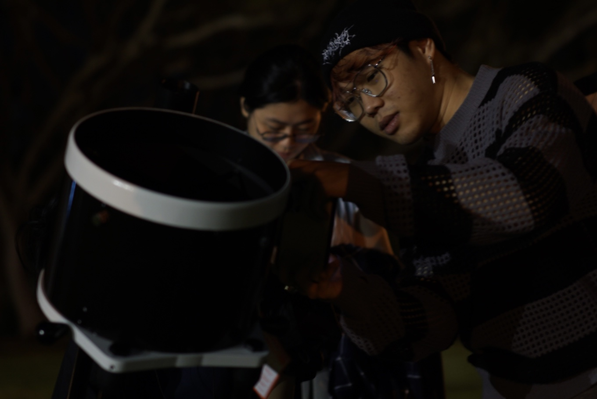
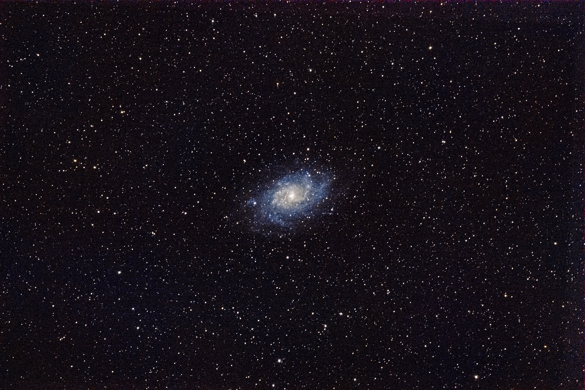
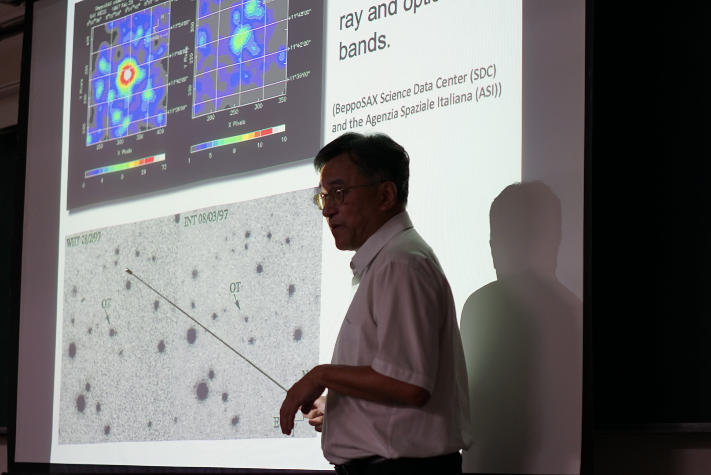

淡江大學天文社｜社團介紹
あの空を、
次は誰とみよう
對宇宙有點好奇，卻不知道從哪開始？
那就跟我們一起，把夜空慢慢看懂。
 Instagram
Instagram往下滑看更多
01 / About us
加入天文社，會發生什麼？
不用先成為天文高手。從認識星座、行星開始，一起觀星、聊天文、追最新的宇宙發現，也認識一群同樣對星空好奇的人。
社團宗旨與理念
堅持拒絕臭GAY的加入
活動介紹
🔭
觀星
找個晴朗的晚上，把望遠鏡架起來，親眼看看課本裡的天體。
🌌
天文科普
黑洞、中子星、星系、宇宙演化——用輕鬆的方式一起把宇宙搞懂。
📷
天文攝影
想拍月亮、星軌、銀河？一起交流拍攝、器材與作品。
🚀
天文講座
不定期邀請教授與研究者，帶我們認識真正的天文研究。
☄️
最新發現
一起追蹤宇宙中的新發現，把新聞裡的天文名詞變成真正懂的東西。
🍻
社員生活
除了天文，也有聚餐、交流與各種社團活動。畢竟觀星也需要隊友。
「不需要很懂天文，
只要你對宇宙有一點好奇。」
只要你對宇宙有一點好奇。」
02 / Club life
這裡不只有星星。
我們希望你帶走的不只是幾個天文知識，而是一段會想一直回來的社團生活。

🔭 課後觀星｜與夜空打聲招呼
📸 天文攝影｜把星空留在記憶裡
🌌 講座課程｜深度認識宇宙03 / Are you one of us?
你可能會喜歡這裡，
如果你曾經……
☑ 看到星星會忍不住拍照
手機也可以，先拍再說。
☑ 好奇黑洞到底是什麼
問題比答案更適合當入社門票。
☑ 想學會認星座
至少下次抬頭不會只說「那顆很亮的」。
☑ 想認識一群有共同興趣的人
宇宙很大，找到同好比較難。
04 / FAQ
新生最常問的問題
完全不懂天文，可以加入嗎？
當然可以！我們不要求你有天文或物理背景，從基礎開始一起玩就好。
需要自己買望遠鏡嗎？
不用。社團活動會有相關器材。
每次活動都一定要參加嗎？
不用！大學課表很容易衝堂，依自己的時間參加就可以。
社團會不會很難、很學術？
有科普、有講座，也有觀星與社員活動。想深入研究可以深入，單純想看星星也完全沒問題。
05 / Join us
沒遇到社員？
沒關係，宇宙不會下課。🌌
先追蹤我們、加入新生群，之後慢慢認識這片星空。